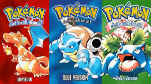

Pokémon Rojo - El Inicio de una Leyenda
Fecha de lanzamiento: 27 de febrero de 1996 (Japón), 28 de septiembre de 1998 (EE.UU.)
Plataforma: Game Boy
Desarrollador: Game Freak
Introducción
*Pokémon Rojo* marcó el inicio de una de las franquicias más icónicas de la historia de los videojuegos. Con una propuesta innovadora de capturar y entrenar criaturas, este título revolucionó el género RPG.
Jugabilidad
El juego sigue una mecánica de rol por turnos, donde el jugador captura Pokémon, los entrena y los enfrenta en batallas estratégicas. Explorar la región de Kanto, desafiar gimnasios y completar la Pokédex son elementos clave que lo hacen tan adictivo.
Gráficos y Sonido
Para su época, *Pokémon Rojo* ofrecía un estilo visual simple pero efectivo, con sprites memorables y una banda sonora compuesta por Junichi Masuda que aún resuena en la nostalgia de los jugadores.
Historia
El jugador asume el papel de un joven entrenador que busca convertirse en el campeón de la Liga Pokémon mientras enfrenta a su rival y la infame organización criminal Team Rocket.
Conclusión
*Pokémon Rojo* es un clásico atemporal que sentó las bases de una saga que sigue vigente hoy en día. Su fórmula sigue siendo tan entretenida como en su lanzamiento.